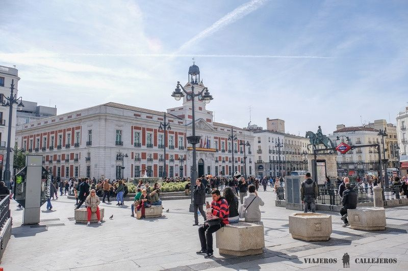
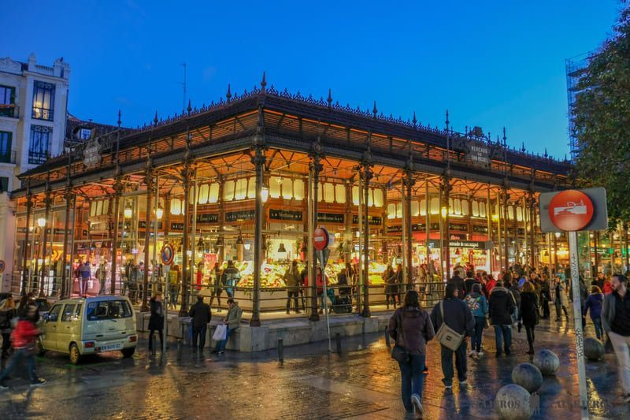
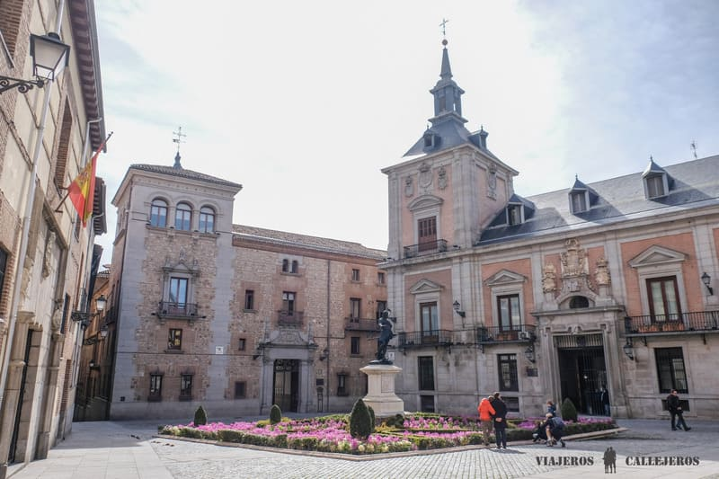
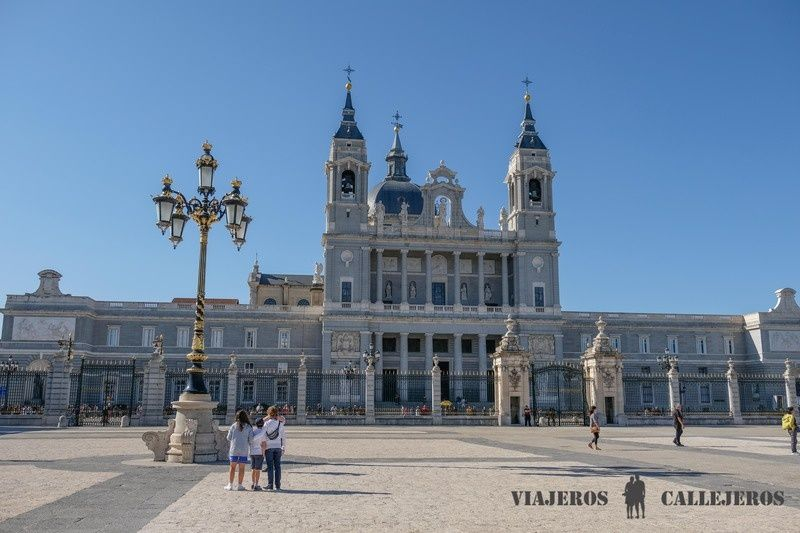
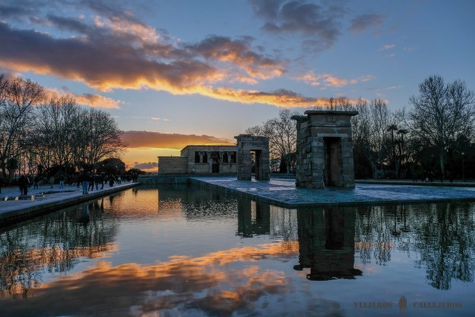
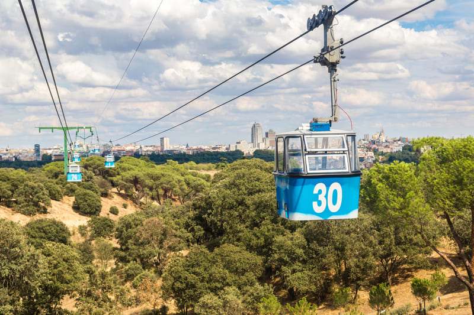
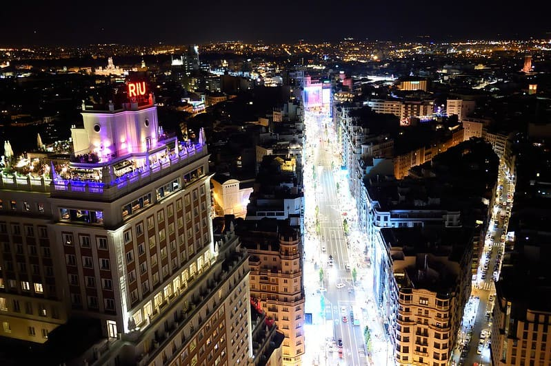
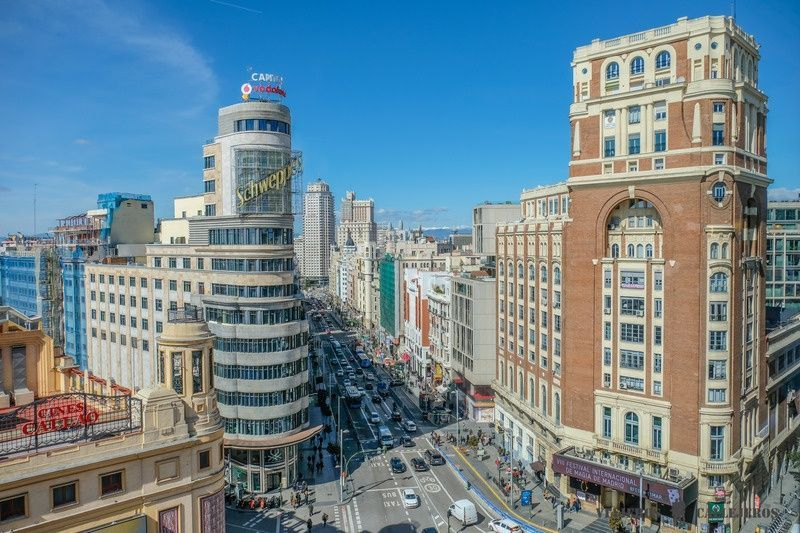

Real Madrid CB
Real Madrid CB10 sitios que visitar en Madrid
1. Puerta del Sol
Pedir un delicioso chocolate caliente con porras en la histórica Chocolatería San Ginés o una napolitana casera en La Mallorquina, para después acercarte a la Puerta del Sol, es una de las mejores cosas que hacer en Madrid. En esta plaza se encuentran varios puntos de interés como la estatua del Oso y el Madroño (símbolo de Madrid), el famoso cartel publicitario de Tío Pepe y la estatua ecuestre de Carlos III, situada justo en el centro. Aunque el lugar más emblemático de este amplio espacio, activo las 24 horas del día, es la Casa de Correos, cuyo reloj da las populares campanadas de fin de año, y que tiene justo al lado, una placa de granito que marca el «kilómetro 0» de España, rodeada una gran rosa de los vientos que incluye los nombres de las capitales de provincia y las ciudades autónomas.
Una excelente forma de conocer la historia de la ciudad y no perderte nada interesante es reservar este free tour por Madrid ¡Gratis!, considerado uno de los mejores free tours en Madrid, o esta visita privada, perfecto para grupos.

2. Plaza Mayor, uno de los lugares que visitar en Madrid
Cerca de la Puerta del Sol, bajando por la calle Mayor, llegarás a la Plaza Mayor, nuestra favorita y otro de los lugares que visitar en Madrid más bonitos. Esta preciosa plaza rectangular de 129 metros de largo y 94 de ancho, está rodeada de importantes edificios como la Casa de la Panadería y otras joyas como el Arco de Cuchilleros y la Estatua de Felipe III, un regalo del Duque de Florencia. Después de recorrer todos sus rincones, puedes sentarte en alguna de sus terrazas para tomar algo y ver el ajetreo diario de turistas o comerte el tradicional bocadillo de calamares en el popular Bar La Campana.
Si tu visita a Madrid es en época navideña, no puedes perderte el mercadillo navideño que se ubica en esta plaza, donde además de los típicos puestos navideños podrás encontrar los artículos de broma tan característicos en estas fechas, en la capital española.

3. Mercado de San Miguel
Situado en pleno centro, el Mercado de San Miguel, es un punto de encuentro para los amantes de la buena gastronomía y uno de los mercados más emblemáticos que ver en Madrid. Este mercado cubierto se caracteriza por su fantástica arquitectura de hierro y por sus más de 30 puestos que te permiten probar muchos de los productos y platos típicos de España como el jamón ibérico, el marisco de Galicia o los quesos manchegos, todos de la máxima calidad. Aunque puedes ir a comer al mediodía, lo más habitual es acercarte a tapear al anochecer cuando hay más ambiente.

4. Plaza de la Villa
Al salir del mercado puedes dar una paseo por las calles del conocido como Madrid de los Austrias, en el que destaca la bonita Plaza de la Villa. Esta plaza es de los pocos rincones de la ciudad que conserva su aspecto medieval con varias construcciones que recuerdan aquella época como la Casa y Torre de Lujanes y la Casa de la Villa, que fue sede del Ayuntamiento y alberga en su interior la Mariblanca, uno de los iconos de la ciudad. Otros puntos interesantes de esta zona son la Plaza de Santa Cruz, la de San Ginés y la calle del Espejo, la más estrecha de la ciudad.

5. Catedral de la Almudena
Siguiendo por la calle Mayor llegarás a la Catedral de la Almudena, considerado el edificio religioso más importante que visitar en Madrid. Construida sobre los restos de una antigua mezquita y primera catedral que se consagró fuera de Roma en 1993, por el Papa Juan Pablo II, este templo dedicado a la Virgen María destaca en el exterior por su enorme cúpula, mientras que las vidrieras de colores del interior crean una ambiente mágico. Antes de salir de la catedral te recomendamos subir a la cúpula que tiene una plataforma desde donde obtendrás unas excelentes vistas del entorno.
Una buena opción para conocer su historia y curiosidades es reservar esta visita guiada que incluye la entrada sin colas al Palacio Real.
Horario de visita: todos los días de 9h a 20:30h.

6. Palacio Real, uno de los edificios que ver en Madrid
Justo enfrente de la Catedral de la Almudena, en la Plaza de la Armería, se encuentra la entrada al Palacio Real, residencia oficial de los reyes de España hasta que se trasladaron al Palacio de la Zarzuela, y que además es otro de los lugares más interesantes que ver en Madrid. Este enorme palacio, el más grande de la Europa Occidental, en la actualidad se utiliza para visitas turísticas y se cierra para ceremonias de Estado y actos oficiales y antes o después de entrar al complejo te recomendamos acercarte a la Plaza de Oriente y sobre todo, a los jardines Sabatini, para hacer buenas fotos del palacio. Una vez en el interior puedes recorrer los lujosos salones y las habitaciones reales, la Farmacia Real y la espectacular Armería Real, con una de las colecciones más importantes del mundo.
Una magnífica forma de conocer la historia del palacio y saltarte las largas colas que se forman en el acceso es reservar esta visita con guía en español o coger oferta que también incluye la visita guiada al Museo del Prado. Si prefieres hacer la visita por tu cuenta te aconsejamos reservar la entrada por internet con antelación, con la que ahorrarás tiempo. Para más información puedes leer este post específico sobre el Palacio Real de Madrid.
Horario de visita: todos los días de 10h a 20h de abril a septiembre, en los otros meses cierra a las 18h.
7. Templo de Debod
Aunque es mejor ir al atardecer, si estás cerca de la Plaza de España, una de las mejores cosas que hacer en Madrid es acercarte en unos 15 minutos andando al Templo de Debod, te aseguramos que no te arrepentirás. Este antiguo templo egipcio de más de 2.200 años de antigüedad fue un regalo de Egipto a España por la ayuda que prestó en su momento para salvar Abu Simbel de quedar sumergido bajo las aguas de la Gran Presa de Asuán. El Templo de Debod se ha convertido en un lugar precioso en el que disfrutar de la tranquilidad y el relax, sobre todo a última hora de la tarde, cuando puedes contemplar una puesta de sol única. A pocos metros del templo, por la parte de atrás, se encuentra un mirador con vistas a la Casa de Campo, al Palacio Real y a la Catedral de la Almudena.

8. Teleférico de Madrid
Cerca del Templo de Debod, en el paseo del Pintor Rosales, puedes subir al teleférico de Madrid que te llevará hasta la Casa de Campo sobrevolando el Parque del Oeste. Prepárate para disfrutar, desde alguna de sus 80 cabinas con capacidad para seis personas, de unas fantásticas vistas del Palacio Real y toda la ciudad desde una altura máxima de 40 metros.

9. Plaza de España
La siguiente parada de la ruta por los lugares que visitar en Madrid más importantes será en la Plaza de España, punto de inicio de la famosa Gran Vía y una de las más grandes de todo el país. Aunque no es la más bonita de la ciudad, merece la pena invertir un tiempo en ver varios monumentos y edificios históricos como la Torre de Madrid, de 142 metros de altura, la Casa Gallardo de estilo modernista, el Monumento a Miguel de Cervantes y el edificio de la Compañía Asturiana de Minas. No te olvides del imponente Edificio España, en el que puedes subir en ascensor hasta la azotea del Hotel Riu Plaza España para tener unas impresionantes vistas panorámicas de 360 grados de todo Madrid, mientras tomas una copa.
Si dispones de poco tiempo una buena forma de recorrer esta larga avenida y parar en los principales puntos de interés de la ciudad es reservar el autobús turístico.

10. La Gran Vía de Madrid
La Gran Vía es la calle más famosa que ver en Madrid y un paseo imprescindible para todos los que visitan por primera vez la ciudad. Su construcción se remonta a principios de siglo XX, cuando se levantaron grandes edificios como el Grassy, el de Telefónica o el Edificio Metrópolis, uno de nuestros favoritos de la ciudad. Además esta arteria concentra alguno de los centros comerciales más grandes y es, junto a su vecina calle Fuencarral, una de las favoritas de los locales y turistas para ir de compras aunque es más famosa por sus grandes teatros, en los que se representan algunas de las mejores obras y musicales del momento como el Rey León, que nos encantó. Puedes reservar la entrada con antelación desde esta página. Si ya has visto el Rey León puedes reservar el increíble musical de Aladdin, uno de los más nuevos.
Si no eres de musicales o prefieres vivir un show típico español puedes reservar este espectáculo de flamenco en un fantástico tablao madrileño cuya decoración está inspirada en las Torres Bermejas de Granada y está muy cerca de la Gran Vía.
Para tener la mejor vista de la Gran Vía con el famoso cartel de Schweppes en primer plano y el edificio de la Torre Madrid al fondo, puedes subir al último piso de El Corte Inglés de Callao y tomar algo en su terraza.
